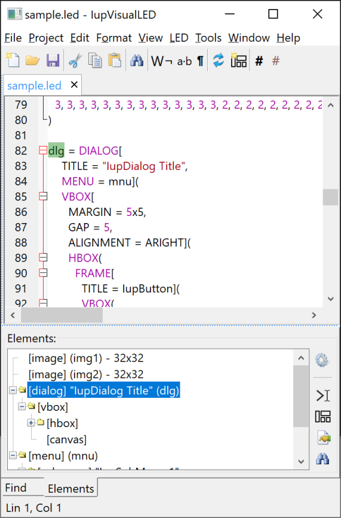

IupVisualLED, or simply VLed, is an integrated development environment to edit and test LED files. It is inspired by some popular visual interface editors, but it has its own characteristics and features.
Historically the VLed name came from a master dissertation written by Raquel Prates back in 1994:
Oliveira Prates, R.; Gattass, M. ;and Figueiredo, L. H.
"Visual LED: uma ferramenta interativa para geração de interfaces gráficas"
M.Sc. dissertation, Computer Science Department, PUC-Rio, 1994.
[prates94.pdf in Portuguese]
The new VLed has the essence of that work and evolve it with the objective of providing a complete environment for editing and testing LED files.
When a LED file is automatically loaded and its elements are created and displayed at the tree bellow. The elements in the tree are listed in the same order they are declared in the code. Some elements in the hierarchy tree are links to the element itself, a double click will select the actual element. A double click in the element will select it in the code. The automatic load can be disabled and the load or unload can be done manually in the LED menu.
Internally the main dialog inherits from the IupScintillaDlg dialog and provides a very powerful multiple file text editor.

A file can be opened from the File/Open menu item, the Recent submenu, from the project file list, it can be dragged and dropped from the system file manager in Windows and in Linux, or from the command line. The command line will process regular led files and if the extension is vled it will open a project file. So the executable can be associated with the led and vled extensions, so the user will be able to double click these files in the system file manager.
By default automatic loading is enabled, so when a file is opened its elements are created and the tree of elements is filled. But even in this configuration after editing the text the changes are not automatically processed. To do so, the LED/Load menu item must be called after finished editing.
In the context menu of the tree of elements, the layout of a dialog can be displayed and its hierarchy edited. But whenever an element is added or removed from the layout the LED is re-written to reflect the changes. When this occurs all comments (except those at the beginning of the original file) are lost and the file is completely reformatted even for small modifications. For now this is what we need to do to keep the LED in sync with the new dialog layout. Maybe in the future we will be able to update selected regions of the LED.
The layout of a dialog allow also to move controls around or the insert at a visually specified location. First select the container where you want to move or insert the element. The you will notice a green line indicating the insertion point.
Similar to the Element Properties dialog, the user can display the list of global attributes, handle names and functions using the Tools / Globals menu. The attributes can be changed in the dialog.
Also in the Tools menu the Class Info item displays a dialog that show all IUP control classes, with their respective information, attributes and callbacks. When an attribute or callback is selected, information about that attribute or callback is displayed.
If you don't want to rewrite your own LED files, or if you want to work with Lua or C files, then the working files can be exported to LED, C or Lua, in the menu Tools.